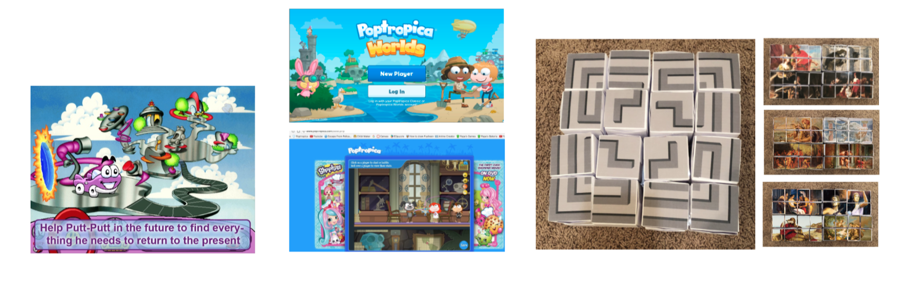
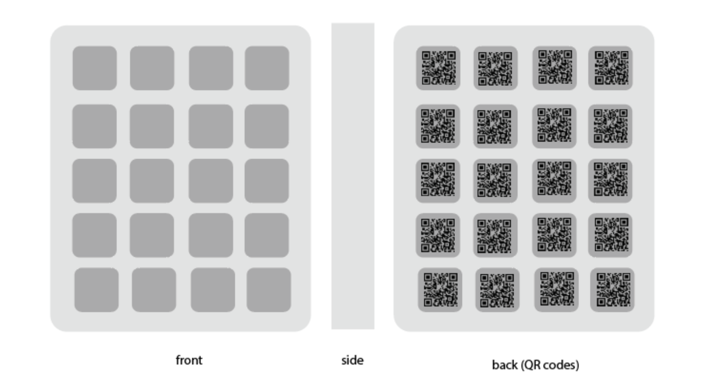

Block Detective.
Research
Te research for thsi project started with digital childhood games like Putt Putt TRavels Through Time, Poptropica, Neopets, and Lego Star Wars on Wii. I also reference a previous project I created called Labyrinth Cubes, which explored the Greek myth of Theseus and the Minotaur. A common theme among these games were the presence of a quest, discovery, and the need to problem solve.
Age Group
Teh traget age group was children 9-12 yrs. According to Piaget, children in this age range are in teh Concrete and Formal Operational Stage. During this period of development, children are able to conceptualize logical and operational thought through the manipulation of physical objects. The main area this project focused on was classification and serialization. This game required children to classify objects/blocks, and place them together according to narrative significance. They are also required to place these blockas based on appropriate action and decision making in order to progress through the game.
Framing Narrative
The game places the player in the role as a detective who is collecting objects and clues in efforts to find the truth and uncover a mysterious death. The story revolves around the recent death of Thatcher Atkinson, a rich elderly author. In the game the player interacts with his children (Charles and Lily), his daughter in law (Darla, who was married to his deceased son Harold), his sister in law (Hope, who was the twin sister of his deceased wife Grace), and his grandchildren (Benjamin, Charlotte, Christopher, and Natalie). The player would be making decisions on who to investigate, which characters to trust and collect clues along the way that should help them reach their final suspect. The narrative is dependent on the interactions taken, which allows the player to arrive at various conclusions.
Physical Interactivity
The physical component of the game takes the form of a shelf, and a collection of blocks. The blocks will serve as the physical narrative artifact. Each block is tied to a certain point in the narrative and will be numbered to match that point in our digital text which will be leading the narrative. We are taking advantage of the 6 sides of the cubes, so that each block has 3 possible courses of action and their respective QR codes. On the back will be QR codes that connect the individual blocks to a digital narrative component. The player will make decisions on how to arrange the blocks, thereby creating a narrative unique to that arrangement. This would allow for a “choose your own adventure” multilinear narrative so we can maximize the replayability of the game. Once the story is completed, the shelf will essentially be an illustrated storyboard of the plot line you decided on. When developing the QR code element, we took some inspiration from a product called a Merge Cube, a physical product that allows the player to view objects using AR and VR through an application they need to download on their mobile device. The cube will “transform” on the screen to suit the particular lesson, as it is meant to be used for educational purposes.

Vision Statement
Ultimately, the goal is to introduce children to the idea of manipulation and creating your own path. Through the completion of the game, the player will have a sequence visual representation of the decisions and choices that they made. By requiring them to arrange the blocks, and make their own decisions, based on the narrative provided, we hope they draw assimilations to their own decisions in real life. We want the game to show that there is not only one path. And, conversely, we also want the opportunity to demonstrate the ability to fail or lose. Within our game, the player does not always win, and we believe that will better serve them in replaying the game, and making broader decisions in their future lives.